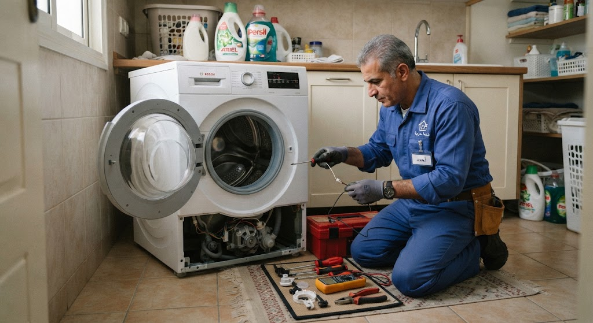
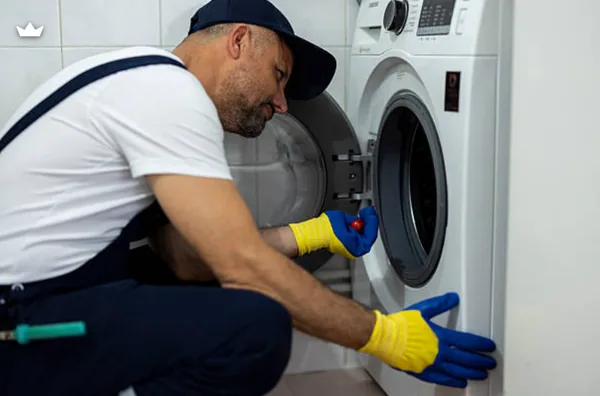

الغسالة هي الجهاز الحيوي في البيت الذي لا يتوقف تقريباً، تعمل أسبوعياً وبشكل مكثف. ولأنها تعمل بجهد كبير فإنها ترسل إشارات إنذار مبكرة قبل أن تتوقف فجأة؛ ومن أبرز هذه العلامات صدور صوت صاخب أو اهتزاز عنيف أثناء العصر، عدم طرد المياه، تسريب المياه من أسفل الحوض، توقف الحلة عن الدوران رغم عمل الموتور، ظهور كود خطأ على الشاشة الرقمية، عدم تسخين المياه، أو صدور روائح غير طيبة من حلة الغسيل.
كل علامة من هذه العلامات توضح أن هناك مكوناً يعمل خارج نطاق كفاءته التصميمية، والتدخل المبكر يحمي قطع الغيار الرئيسية مثل الموتور، كارتة التحكم، أو رمان البلي من التلف الكامل ويحافظ على ميزانيتك من تكاليف باهظة.
الغسالات في مصر تخضع لظروف تشغيل قاسية لا تواجهها نظيراتها في أوروبا؛ فكثافة دورات الغسيل اليومية في الأسر المصرية، تذبذب التيار الكهربائي المفاجئ، وكمان استخدام كميات مسحوق قد تكون غير مناسبة أو زائدة تتراكم داخل الحلة وتعوق حركة الأجزاء الداخلية، كلها عوامل تسرع من استهلاك أجزاء الغسالة الميكانيكية والكهربائية.
هذه الظروف تجعل الموتور ومساعدين الغسالة وطلمبة الطرد يعملون بجهد مضاعف، ولهذا فإن أغلب بلاغات أعطال الغسالات التي تصل لفنينا تتعلق بانسداد طلمبة الطرد بالعملات والشوائب، أو تآكل مساعدين الغسالة نتيجة حمولة الملابس الزائدة، وهي مشاكل نحلها بمهنية في زيارة منزلية واحدة.
الغسالة تعتمد على منظومة متكاملة تبدأ بفتح صمام دخول المياه لتعبئة الحلة بالمستوى المطلوب، ثم يعمل الهيتر أو سخان المياه لتسخينها حسب درجة حرارة البرنامج المختارة، بعدها يبدأ الموتور في تحريك الحلة يميناً ويساراً لتقليب الملابس وتنظيفها، وأخيراً تأتي مرحلة طرد المياه عبر طلمبة الصرف وعصر الملابس بسرعات عالية لتخرج شبه جافة.
كارتة التحكم أو لوحة التشغيل الإلكترونية هي "عقل" الغسالة الذي يدير كل هذه الخطوات بالتنسيق مع حساسات مستوى المياه ودرجة الحرارة باب الغسالة والأمان، وأي خلل في أي جزء من هذه المنظومة يوقف البرنامج بالكامل أو يظهر كود خطأ على الشاشة.
الغسالات الأوتوماتيك (ذات التحميل الأمامي) توفر عناية فائقة بالملابس، وتسخيناً ذاتياً للمياه بدرجات حرارة عالية، وتعتمد على مسحوق قليل الرغوة، وتتميز بنتائج غسيل مذهلة وعصر فائق السرعة، لكنها تتطلب تركيباً دقيقاً ومحافظة على كاوتش الباب.
أما الغسالات الفوق أوتوماتيك (تحميل علوي) فتتميز بسهولة إضافة ملابس أثناء التشغيل، سرعة دورات الغسيل العادية، وتكلفتها الاقتصادية في بعض قطع الغيار والصيانة، كما أنها لا تحتاج لمساحات ضيقة معقدة وتتحمل كميات غسيل متنوعة بكل سهولة.

فحص الأجزاء الداخلية
إصلاح وصيانة بالمنزلالفارق بين قطعة غيار أصلية وأخرى مقلدة أو مجهولة المصدر قد يبدو مغرياً في السعر لحظة الإصلاح، لكنه يظهر خلال شهور قليلة في صورة أعطال متكررة تجهد ميزانيتك. تلتزم **المؤسسة المعتمدة** بتوريد وتركيب موتورهات، طلمبات، ومضخات، وكارتات أصلية 100% مع فاتورة رسمية، ويشمل الضمان ستة شهور كاملة على القطعة وعلى المصنعية المنفذة، مع زيارة مجانية تماماً إذا تكرر نفس العرض.
غالباً بسبب تراكم الصابون والأوساخ في درج المسحوق أو خلف كاوتش الباب الداخلي نتيجة التشغيل الدائم على درجات حرارة منخفضة، وينصح بعمل دورة خل وتطهير شهرية.
يرجع لاستهلاك وتلف المساعدين، تآكل رمان البلي، عدم توازن كمية الملابس داخل الحلة، أو عدم ضبط وزنية الأرجل السفلية للغسالة على أرضية متساوية.
للغسالات الأوتوماتيك يجب حصراً استخدام مسحوق أو جل قليل الرغوة، لأن المسحوق العادي ينتج رغوة كثيفة تعيق حركة الحلة وتتراكم وتتلف أجزاء الكهرباء والكارتة.
95% من أعطال الغسالات يتم إصلاحها بالكامل وباحترافية داخل منزلك وأمام عينيك دون أي حاجة لنقل الجهاز، توفيراً للوقت وحفاظاً على الهيكل الخارجي.
تغيير رمان البلي والمساعدين يستغرق عادة من ساعتين إلى ثلاث ساعات لأنها تتطلب فك الحلة بالكامل، ويتم إنجازها بمهارة تامة في زيارة منزلية واحدة من قِبل فنيينا المتخصصين.
تواجه مشكلة في جهازك؟ اختر العطل من القائمة أدناه لمعرفة الأسباب المحتملة وطرق الإصلاح، أو اتصل بنا مباشرة على 19580
مشكلة شائعة توقف دورة الغسيل تماماً في البداية.
الأسباب المحتملة: تلف صمام دخول المياه، انسداد الفلتر الداخلي للخرطوم، أو ضعف ضغط المياه القادم من الشبكة.
تتوقف الغسالة ومياه الغسيل ممتلئة داخل الحلة.
الأسباب المحتملة: انسداد طلمبة الطرد بعملات معدنية أو بقايا وبر، أو تلف موتور طلمبة الصرف نفسها.
صوت مزعج للغاية أثناء مرحلة العصر السريع.
الأسباب المحتملة: تلف رمان البلي (البلبرنج)، تآكل المساعدين، أو عدم اتزان الغسالة على الأرضية.
بركة مياه تتكون على الأرضية أثناء أو بعد دورة الغسيل.
الأسباب المحتملة: تلف أو قطع في كاوتش باب الغسالة، شرخ في خراطيم الصرف أو الدخول الرئيسية.
الجهاز صامت تماماً وكأنه غير موصل بالكهرباء.
الأسباب المحتملة: تلف فيش الكهرباء، عطل في كارتة التحكم الرئيسية، أو قاطع أمان داخلي مفصول.
الموتور يصدر صوتاً لكن حلة الغسيل ثابتة لا تتحرك.
الأسباب المحتملة: قطع أو انزلاق سير الحركة (الـستير)، أو انفصال طنبورة الحلة الداخلية.
الملابس بالداخل والباب مغلق بإحكام ولا يستجيب.
الأسباب المحتملة: تلف لوك أمان الباب (Door Lock)، أو وجود مياه متبقية داخل الحلة تمنع نظام الأمان من فتح الباب.
الأسعار المذكورة تقديرية لأعطال الغسالات وتختلف حسب الموديل ونوع قطعة الغيار، ويتم إبلاغك بالسعر النهائي بعد الفحص وقبل بدء الإصلاح.
صيانة غسالات لأجهزة سامسونج (Samsung) خدمة منزلية كاملة يصل فيها إليك فني متخصص مجهز بالمعدات الحديثة وقطع الغيار الأصلية، ليتم الإصلاح أمامك من الزيارة الأولى في أغلب الحالات، وهي الخدمة التي نالت بها المؤسسة المعتمدة ثقة آلاف العملاء.
فريقنا الفني منتشر في مختلف المحافظات والمناطق، لنضمن الوصول إليك أينما كنت في أسرع وقت ممكن.
التكلفة عندنا شفافة بالكامل: رسوم كشف معلنة وثابتة، وتكلفة إصلاح يتم الاتفاق عليها بعد التشخيص وقبل بدء أي عمل؛ لا توجد رسوم مخفية أو مفاجآت، وتحصل على فاتورة رسمية بكل التفاصيل.
قبل أي إصلاح نجري فحصاً شاملاً يشمل قياس الجهد، اختبار الحساسات ولوحة التحكم الذكية، ومراجعة التوصيلات الداخلية؛ هذا التشخيص الدقيق يضمن معالجة السبب الجذري للعطل وليس أعراضه الظاهرة فقط.
خدمتنا متاحة طوال أيام الأسبوع. اتصل الآن على 19580 واحصل على خدمة صيانة فورية ومضمونة.
صيانة غسالات لأجهزة توشيبا (Toshiba) بمعايير احترافية: كشف دقيق بأجهزة قياس حديثة، قطع غيار أصلية مناسبة لكل موديل، وفني مدرب يشرح لك سبب العطل قبل أي إصلاح — هذا ما يحصل عليه عملاء المؤسسة المعتمدة في كل زيارة.
نلتزم بتقديم تقرير فني مفصل عن حالة الجهاز والأجزاء التي تحتاج إصلاحاً أو استبدالاً، مع فاتورة رسمية وضمان مكتوب على كل عملية صيانة.
تشمل خدمتنا جميع أنواع أعطال الغسالات دون استثناء: الأعطال الكهربائية، مشاكل المواتير، الطلمبات، السخانات، بالإضافة إلى أعمال الصيانة الدورية التي تطيل عمر الجهاز وتخفض استهلاك الكهرباء والمياه.
كل إصلاح مشمول بضمان شامل على العمل والقطع، وأسعارنا عادلة ومعلنة بدون أي زيادات. اطلب فنياً الآن على 19580.
صيانة غسالات لأجهزة أريستون (Ariston) خدمة منزلية متكاملة يصل فيها إليك فني متخصص مجهز بأحدث أدوات الفحص وقطع الغيار الأصلية، ليتم الإصلاح أمامك من الزيارة الأولى.
يستخدم فنيونا أجهزة القياس والتشخيص الإلكتروني لتحديد الأعطال بدقة متناهية، مما يوفر عليك الوقت والمال ويضمن إصلاحاً صحيحاً من المرة الأولى.
فريق خدمة العملاء متاح يومياً للرد على استفساراتك وتحديد المواعيد بمرونة تامة عبر الهاتف أو الواتساب أو من خلال موقعنا الإلكتروني.
نمنح ضماناً حقيقياً على الإصلاح وقطع الغيار المستبدلة يصل إلى 6 شهور كاملة. للحجز اتصل بالخط الساخن 19580.
عندما يتعطل جهازك فجأة فأنت تحتاج صيانة غسالات لأجهزة كريازي (Kiriazi) من جهة موثوقة تصلك بسرعة؛ لهذا يعتمد آلاف العملاء على الفنيين المعتمدين لدى المؤسسة المعتمدة في إصلاح أعطالهم داخل المنزل دون نقل الجهاز.
لدينا خبرة تراكمية واسعة في إصلاح جميع أعطال الغسالات مهما كانت بسيطة أو معقدة، بما في ذلك المشاكل الميكانيكية والإلكترونية.
قبل أي إصلاح نجري فحصاً دقيقاً يشمل الموتور، السخان، ونظام الصرف؛ لضمان معالجة المشكلة من جذورها وعدم تكرارها نهائياً.
لا تتردد في التواصل معنا على 19580 للحصول على استشارة فنية مجانية وحجز موعد الصيانة في الوقت المناسب لك.
صيانة غسالات لأجهزة زانوسي (Zanussi) لم تعد مهمة صعبة أو مكلفة؛ فبفضل شبكة فنيين تغطي جميع المناطق وخبرة طويلة، توفر لك المؤسسة المعتمدة إصلاحاً سريعاً بقطع أصلية وأسعار عادلة ومعلنة.
نلتزم بتقديم تقرير فني مفصل عن حالة الجهاز والأجزاء التي تحتاج صيانة، مع فاتورة رسمية وضمان مكتوب على الخدمة.
تشمل خدمتنا كافة أعطال غسالات زانوسي الأوتوماتيك والفوق أوتوماتيك مع توفير حلول فورية لكل المشاكل الفنية بالمنزل.
كل إصلاح مشمول بضمان شامل، وأسعارنا واضحة وثابتة. اطلب فنياً الآن على 19580.
صيانة غسالات لأجهزة إل جي (LG) خدمة منزلية متخصصة تتعامل مع المواتير الدائرية الحديثة (Direct Drive) والكارتات الذكية بأعلى كفاءة، مع توفير قطع الغيار الأصلية المعتمدة.
فريقنا مدرب خصيصاً على التعامل مع التقنيات الحديثة في غسالات إل جي وبرامجها المتنوعة لتوفير تشخيص سريع وإصلاح دقيق من الزيارة الأولى.
نقدم ضماناً معتمداً لمدة 6 شهور على جميع أعمال الإصلاح والقطع المستبدلة لراحة بالك التامة. اتصل بنا على 19580.
صيانة غسالات لأجهزة يونيون إير (Unionaire) خدمة منزلية كاملة يصل فيها إليك فني متخصص مجهز بالمعدات وقطع الغيار الأصلية، ليتم الإصلاح أمامك بكل احترافية وأمان.
يستخدم فنيونا أحدث أجهزة القياس لتحديد الأعطال بدقة متناهية، مما يوفر عليك الوقت والجهد ويضمن كفاءة التشغيل بنسبة 100%.
خدمتنا متاحة طوال أيام الأسبوع. اتصل الآن على 19580 واحصل على خدمة صيانة فورية.
صيانة غسالات لأجهزة وايت ويل (White Whale) في نفس اليوم وبضمان مكتوب يصل إلى 6 شهور — خدمة منزلية متكاملة يقدمها فريق مدرب على أحدث الموديلات والأنظمة الإلكترونية.
نحتفظ بمخزون واسع من قطع الغيار الأصلية والمتوافقة لجهازك، مما يضمن إتمام الإصلاح في زيارة واحدة دون أي تأخير.
للحجز والاستعلام اتصل بنا على الخط الساخن 19580 في أي وقت.
نغطي محافظات الدلتا بالكامل. اختر محافظتك أو مدينتك.
سواء بتقول صيانة غسالات أو بأي صيغة تانية، الخدمة واحدة والرقم واحد: 01289966660
كل فني مدرب على أعطال الغسالات تحديداً والمكونات الدقيقة، وليس فنياً عاماً لكل شيء.
نستخدم قطع غيار أصلية ومضمونة 100% مع إطلاعك على القطعة القديمة قبل استبدالها.
ضمان مكتوب على المصنعية وقطع الغيار، وإعادة الزيارة مجاناً لو تكرر نفس العطل.
نود التوضيح الكامـل لعملائنا الكرام أن مؤسسة المعتمد جروب هي مركز خدمة وصيانة معتمد خارجي للأجهزة المنزلية، ولسنا الشركة الرئيسية أو الوكيل الحصري المصنّع للعلامات التجارية المختلفة؛ نحن نقدم خدمات الصيانة الفورية، الإصلاح، وتوفير قطع الغيار الأصلية بكفاءة عالية وبخبرة فنية متخصصة لراحة عملائنا.
في مؤسسة المعتمد جروب، نُدرك تماماً أهمية خصوصيتك ونلتزم التزاماً كاملاً بحماية بياناتك الشخصية بكل أمان وشفافية تامة أثناء طلبك لخدمات الصيانة المنزلية.
جميع البيانات التي تقدمها لنا (مثل: الاسم، رقم الهاتف، والعنوان التفصيلي) تُستخدم حصرياً لتنفيذ طلب الصيانة وتوجيه الفريق الفني المعتمد لمنزلك في أسرع وقت، ولا يتم مشاركتها أبداً مع أي طرف ثالث.
نستخدم أحدث تقنيات التشفير الرقمي وبروتوكولات الأمان لضمان حماية وسائط الاتصال بين جهازك وموقعنا، مما يمنع أي محاولات لاعتراض أو استطلاع بياناتك أثناء التصفح أو إرسال طلبات الصيانة.
تستعين منصة المعتمد جروب بملفات تعريف الارتباط البسيطة لتحسين تجربتك في تصفح الموقع، تذكر تفضيلاتك، وتقديم محتوى ملائم وسريع يلبي احتياجاتك الفنية فوراً.
قد نستخدم رقم هاتفك للتواصل معك فقط بشأن حالة طلب الصيانة الخاص بك، أو إرسال تفاصيل الفاتورة والضمان المعتمد، مع الاحتفاظ بحقك الكامل في طلب مراجعة، تعديل، أو حذف بياناتك في أي وقت.